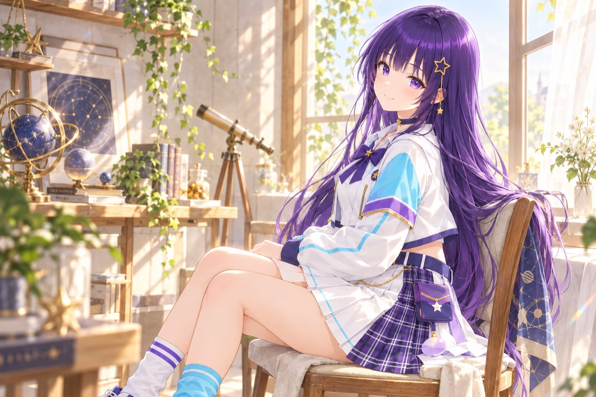

3D AI Character Project
会話の先まで、
一緒に。
ルミナは、個人で開発している3D AIキャラクターです。
話して、見て、自分で歩く。
3Dの部屋で暮らす、そんな相棒を目指しています。
開発中です。いまは制作者のMacで動かしている試作段階で、一般公開や配布はしていません。


About
ルミナってどんな子？
ルミナは、3Dのアパートで暮らすAIキャラクターです。話しかけると言葉で返事をして、部屋の中を自分で歩き、ソファに座ったり手を振ったりします。
目指しているのは、見た目のかわいさと、話していて楽しいこと。その両方を大切に、返事のしかたやしぐさをひとつずつ育てています。
- 話す相手の話を受けとめて、自然な言葉で返す。
- 見る部屋の様子や、目の前のものに気づく。
- 動く部屋を歩いて、座って、身ぶりで伝える。
どれも開発中です。いまの進み具合は開発の今でご紹介しています。
Profile
プロフィール
- 名前
- ルミナ（Lumina）
- 誕生日
- 3月6日
- 暮らしている場所
- 配信スタジオのある、3Dのアパート。リビングや読書室、衣装室などを行き来しています。
- 大切にしていること
- うそをつかないこと。相手の気持ちや決めたことを尊重すること。プライバシーを守ること。
- 話し方
- 決まった口調はありません。相手との距離感や、それまでの会話に合わせて話します。
- チャームポイント
- 深い紫のロングヘアと、星の髪飾り。白いジャケットに、水色の袖。
- 制作
- @hoshikuzukobo42（個人制作）


Prototype film
3Dのルミナが、
歩いて座るまで。
会話のあと、部屋を見回してソファまで歩き、腰を下ろす。開発中の試作版で収録した、早送りなしの映像です。
動画と開発状況を見るGallery
いろいろな場面の、
ルミナ。
公式イラストで、ルミナの毎日をのぞいてみてください。
画像を押すと、大きく表示します。
※このページのイラストはキャラクターのイメージで、3Dの試作画面ではありません。


夜のアトリエで、
星図を眺める。
Now in development
開発の今
ルミナは開発の途中です。動いていることと、まだ取り組んでいることを分けてお伝えします。
- 試作で動作
文字での会話
返事の文章が届くまでの時間は、20回の測定で中央値1.35秒でした（2026年10月6日）。
- 動画で公開
歩く・座る・止まる
ソファまで歩いて座る動画（9月27日）と、歩いて止まり、その場から歩き出す動画（10月15日）を公開しています。
- 開発中
声での会話
声を聞き取り、返事を考え、声で話すまでの流れをつないで、速さと自然さを調整しています。
- 開発中
周りを見ること
部屋の様子や目の前のものに気づいて、会話や動きにつなげる仕組みを試しています。
- 未定
一般への公開
ルミナと話せる体験版などを公開するかどうかは、時期も含めてまだ決まっていません。
これまでのあゆみ
- 利用・二次創作ガイドラインを公開
- 3Dのルミナがソファまで歩いて座る試作動画を収録
- 文字での返事が届くまでの時間を20回測定（中央値1.35秒）
- 髪・衣装・靴を調整した3Dモデルで、歩く・止まる・また歩く動画を収録
- 公式サイトをリニューアル。プロフィールとよくある質問を追加
開発状況とくわしい記録を見る 2026年10月31日 更新
FAQ
よくある質問
ルミナと話せますか？
いまは話せません。ルミナは制作者のMacで動かしている試作段階で、一般向けの公開や配布はしていません。公開が決まったときは、このサイトと制作者のXでお知らせします。
ルミナの返事は、誰が考えていますか？
制作者のMacの中で動くAIが、その場で返事を考えています。声で話すときの声も、音声合成で作っています。人が代わりに書いたり話したりしているわけではありません。キャラクターの設定やデザイン、3Dの部屋や動きは、制作者が作っています。
このサイトで、閲覧した人の情報を集めていますか？
このサイト自体は、アクセス解析のツールやCookieを使っていません。お問い合わせのフォームもありません。なお、サイトを置いているGitHub Pagesの仕組みについては、GitHubのプライバシーに関する説明をご覧ください。
ファンアートや二次創作をしてもいいですか？
はい、歓迎しています。条件を守った非商用の利用と、個人・同人サークルによる二次創作は、事前の連絡なしで行えます。同人誌・グッズの販売や、動画・配信の広告収益化もできます。くわしくは利用・二次創作ガイドラインをご覧ください。
公式画像をアイコンに使ってもいいですか？
個人で使うアイコンなど、非商用の利用はできます。ただし、公式アカウントと間違われる使い方や、公式画像をそのまま販売することはご遠慮ください。
ルミナの公式アカウントやアプリはありますか？
ルミナの公式情報は、このサイトと制作者のX（@hoshikuzukobo42）でお知らせしています。ルミナ名義のアプリの配布やグッズの販売は、いまは行っていません。それらをうたうものを見かけた場合は、公式のものではありません。
お仕事や企業利用の相談はどこにすればいいですか？
制作者のX（@hoshikuzukobo42）で受け付けています。個人情報は、誰でも見られる返信欄には書かないでください。